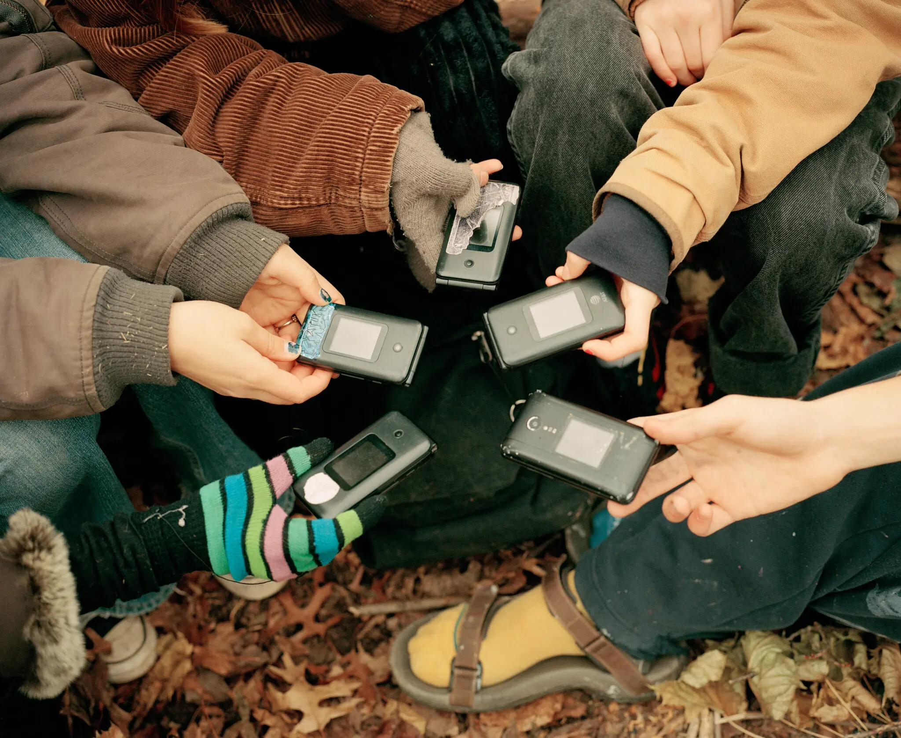
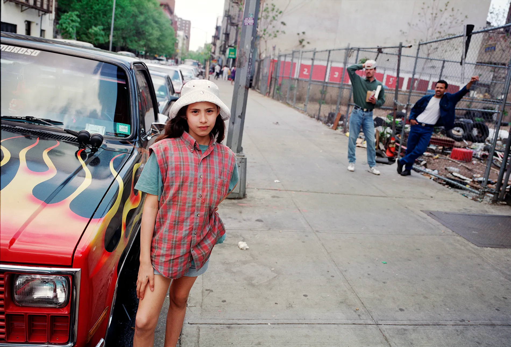

Hi! My name is Liani Frederick. I'm a journalism student at the Newmark J-School. My interests are arts and culture, specifically film and television, and how race, gender, and media intersect.
Here are three of my favorite pieces.
This feature highlights a group of students who reject modern techonology in an effort to curb phone addictions.
This article talks about the relationship black audiences have with mafia and mob movies, and why they are so beloved in these spaces.
This photo series examines the life of a young Puerto Rican girl as she grows in the Lower East Side with her family.
